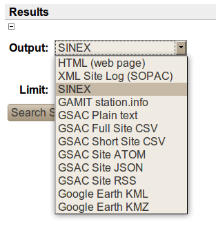

| Previous | Next |
Here is part of a typical GSAC Search Sites form.
The free form text search fields (e.g., "4 Char ID", "Site Name") support wildcarding with "*". So, for example, in the above image the search will result in any sites that begin with "P". You can of course search for a single site, by name.
You can search with other search criteria, including typically date ranges and geographic bounds. The bounds are specified with a north latitude / west longitude / east longitude / south latitude. West Longitude may be negative, or may be simply a smaller positive longitude than the east latitude.
You can easily switch to the Search Files form. Click on the "File Search Form" icon. All site search criteria specified to Search Sites will be included in the Search Files form.

There are several output formats for the results of the search. Click open the
Results
Output:
option box, located below the Advanced Site Query area. The choices are

By default the results are a web page ("Site HTML") with a table of sites' information.
Other formats include:
The table of site search results on a web page looks like:

Clicking on an item in the 4 Char ID column brings up a web page about that site. Here is a web page for one site:


Clicking on the Search Info tab just under Search Results on the first web page from a site search lets you see the search results in any of the other output formats.
| Previous | Next |